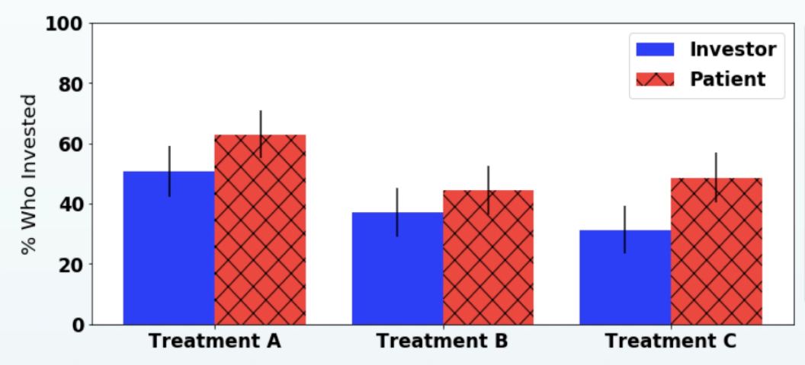
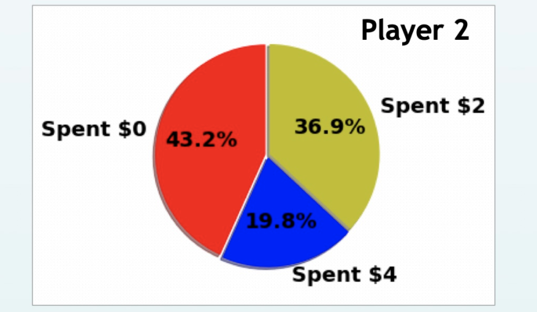

Using a Trust Game Framework to Evaluate Risk Aversion to Sharing Genomic Data
Purpose
To determine if participants differed in the level of risk aversion to sharing genetic data versus risking a loss of monetary wealth, using a trust game procedure that models coooperative relationships.
Background
There is an increasing tendency for patients to have their genomic data sequenced and processed in the climical domain. Such data can benefit patients, healthcare providers, and researchers, but can also lead to various privacy risks. This project gauged the degree to which an individual would assume such risks in exchange for the potential benefit that may be realized by sharing genetic data for biomedical research purposes. The methodology built on a two-participant trust game framework that had been used for in-person participants at Vanderbilt. This project used Amazon Mechanical Turk to try to replicate the results of the original study with participants online.
Description
Participants were divided into four roles: patient, physician, investor, and money manager. The patients and investors could choose to spend the money they started with in order to gain more money, but also risked losing their investment. The differences were framed in how the risk/reward were presented to the participants. Patients would benefit from possibly gaining knowledge about preconditions that they could be treated for, while investors could make money off of a monetary investment. Patients would suffer a loss if their genetic data was compromised, while investors would suffer a loss due to market fluctutations. Players in the Physician and Money Manager roles were given the opportunity to spend money to improve the security of the investments of the Patients and Investors. They would gain no personal benefit for doing so, but their investment would improve the chances that the Patients and Investors wouldn't suffer a loss. The participants were also separated into four groups which were meant to isolate the impact of Profit Motive, Altruism, Trust, and Reciprocity on decision making.
Procedure
340 participants were surveyed using Amazon Mechanical Turk. The data was imported as a csv and analyzed using tests written in Python on Jupyter Notebook.
Results
Participants were significantly more likely to take risks with genomic data in comparison to monetary investments. (Figure 1)
More than half of participants in the Physician or Money Manager condition chose to go against their economic self-interest in order to spend on the security of the Patient or Investor they were paired with. (Figure 2)
Trust played a part in the motivation to invest; participants in the Trust Treatment were significantly more likely to invest. (Figure 1)

Figure 1:
% of Investors vs Patients who chose to invest. Treatment A isolates motivation by Trust; Treatment B isolates motivation by Altruism; Treatment C isolates motivation by Profit Motive. Patients were more likely to invest than Investors in all condtions, significantly for Treatment A (p<.05). Investments were more likely in the Trust treatment versus the Altruism or Profit Motive treatments (p<.01)

Figure 2:
What proportion of Physicians and Money Managers (n=94) spent money to protect the investment of the Patients and Investors. Player 2 received no personal benefit from deciding to invest in the security of their partner's investment.
{kind=link}
{kind=link}